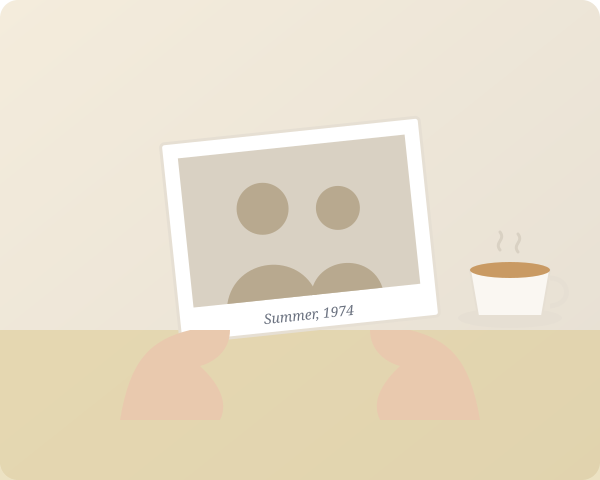

Sarah H.
Founder & Lead Editor
Former documentary editor who started Funeral Pictorial after making her grandmother's tribute. Still edits most of them herself.
We're a small team of editors and storytellers who believe a funeral should show who someone truly was: the laughter, the ordinary Tuesdays, the people they loved.

When our founder's grandmother passed, the family had three days, a shoebox of curling prints and a funeral home with a television but no one to run it. The slideshow she put together that night, between phone calls and casseroles, was the part of the service people talked about for years.
Funeral Pictorial grew from that evening. We realised that grieving families don't need another task. They need someone to take the photos, listen carefully, and give them back a story worth gathering around.
Today we serve families and funeral homes across the region, and every tribute still gets the same care that first one did.
"We're not making a video. We're making the moment a room full of people remembers together."
We answer the phone with patience, not a script. You'll always speak to the person editing your tribute.
A funeral has one date. We have never missed a service, and we plan every job with margin for the unexpected.
No automated templates. A real editor chooses every transition, crop and cue to fit the person being honoured.
Your photos are stored securely, shared only through private links and deleted on request once the service is over.
Small by design, so every family gets a name and a direct line.
Founder & Lead Editor
Former documentary editor who started Funeral Pictorial after making her grandmother's tribute. Still edits most of them herself.
Family Liaison
Your first call and your last. James gathers photos, answers questions at any hour and coordinates with the funeral home.
On-site & Technical
Delivers and sets up TVs and sound, tests every file at the venue and makes sure the show runs without a hitch.
If we can't meet the agreed deadline, you don't pay. It hasn't happened yet.
Swap a photo, change a song, fix a date. We keep going until it's right.
Original prints are returned by hand. Digital files are deleted on request.
Every TV and speaker is tested on site before the first guest arrives.
Tell us a little about your loved one and we'll take it from there.